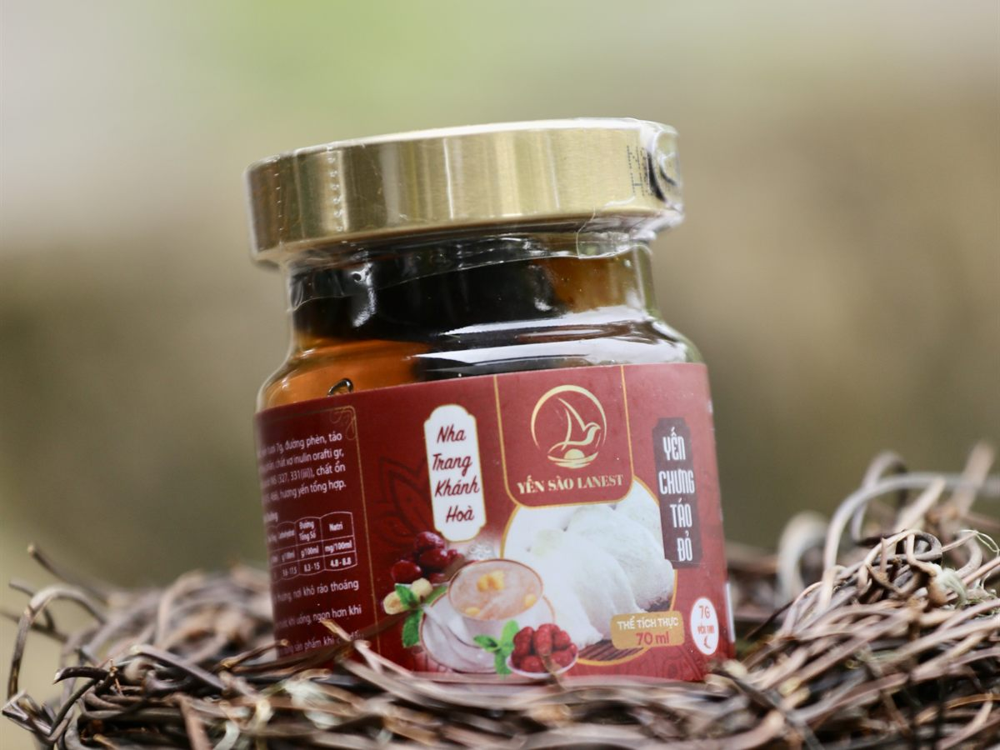
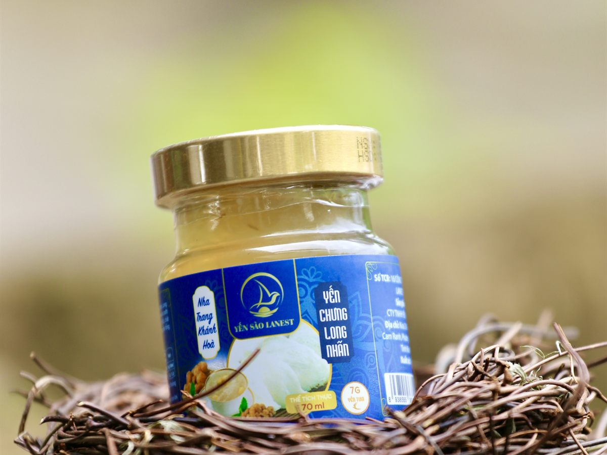

Yến Sào Cho Phụ Nữ Sau Sinh: Dùng Khi Nào, Bao Nhiêu, Chọn Loại Nào
Yến Sào Lanest · Đăng ngày 30/10/2026

Nhà vừa có em bé, ông bà, chồng, bạn bè thường muốn mua gì đó cho mẹ bồi bổ, và yến sào hay được nhắc tới đầu tiên. Bài này nói gọn cách dùng yến sào cho phụ nữ sau sinh: việc gì làm trước, dùng bao nhiêu, chọn loại nào cho đỡ mệt, và những chỗ Lanest không trả lời thay bác sĩ.
Yến chưng táo đỏ, vị mà cẩm nang của Lanest ghi là phù hợp với phụ nữ sau sinh
1. Mẹ sau sinh có nên ăn yến không?
Trong mục "ai nên dùng yến", cẩm nang tổng quan của Lanest có ghi phụ nữ mang thai và sau sinh, bên cạnh trẻ em, người lớn tuổi và người sau ốm. Theo tài liệu này, trong 100g tổ yến có khoảng 45–55% protein, 18 loại axit amin và 31 nguyên tố vi lượng như canxi, sắt, magie, kali, kẽm.
Nhưng yến là thực phẩm, không phải thuốc, và theo cẩm nang của Lanest thì yến không phải "thần dược tức thì". Với mẹ sau sinh, yến chỉ là một món trong chế độ ăn, không thay bữa chính hay lời dặn của bác sĩ.
2. Sau sinh bao lâu thì ăn yến được? Hỏi bác sĩ trước
Lanest không đưa ra mốc "sau sinh mấy ngày, mấy tuần thì ăn yến", vì sinh thường hay sinh mổ, có đang uống thuốc hay không, mỗi người mỗi khác. Trước khi dùng, nên hỏi bác sĩ sản khoa:
- Mẹ đã ăn yến được chưa, hay cần đợi thêm?
- Mẹ đang cho con bú thì dùng yến có cần lưu ý gì không?
- Mẹ có cần hạn chế đường không? Yến chưng thường có đường phèn, mà đường phèn cũng là đường.
- Mẹ đang điều trị, đang uống thuốc thì ăn thêm yến có sao không?
Chụp nhãn thành phần trên hũ, hộp yến cho bác sĩ xem là nhanh nhất. Mẹ sinh mổ hoặc đang điều trị bệnh thì đừng bỏ qua bước này.
3. Dùng bao nhiêu, lúc nào?
Lanest chưa có hướng dẫn liều riêng cho mẹ sau sinh. Các tài liệu cẩm nang của Lanest ghi mức cho người trưởng thành hơi khác nhau (có chỗ ghi 3–5 lần/tuần, có chỗ ghi 2–3 lần/tuần, mỗi lần 5–10g). Với mẹ sau sinh, Lanest chọn gợi ý ở mức thận trọng hơn:
| Tần suất | Bắt đầu khoảng 2–3 lần/tuần, không cần ăn mỗi ngày |
| Lượng mỗi lần | Từ mức thấp, khoảng 5g; lượng cụ thể theo lời bác sĩ |
| Thời điểm | Sáng sớm hoặc buổi tối, khi bụng nhẹ |
| Tránh | Ăn ngay sau bữa chính; đun sôi yến trực tiếp |
| Cách dùng | Đều đặn, không ăn dồn dập rồi bỏ ngang |
Lần đầu nên dùng lượng nhỏ, thấy hợp rồi mới tăng dần. Ăn nhiều không có nghĩa là tốt hơn. Xem thêm hướng dẫn dùng yến đúng cách theo từng nhóm tuổi.
4. Chọn loại yến nào cho mẹ sau sinh?
Nhà có em bé mới sinh thì ai cũng bận, nên chọn loại yến hợp với sức của cả nhà:
- Tổ yến thô: còn lông, cẩm nang ghi hợp người có kinh nghiệm sơ chế. Lúc này ít ai đủ thời gian nhặt lông.
- Yến tinh chế: đã sạch lông, chỉ cần ngâm và chưng, hợp với nhà có người chưng giúp mẹ. Lanest đóng hộp 50g và 100g.
- Yến chưng sẵn (yến hũ): mở nắp là dùng được. Hũ đã mở nắp phải bảo quản lạnh.
Yến hũ Lanest có hai dòng. Dòng yến hũ 7g yến tươi (14 vị) ngoài yến và đường phèn còn có collagen thủy phân, chất xơ inulin, chất ổn định, chất điều chỉnh độ acid, hương yến tổng hợp. Dòng Tổ Yến Chưng Nguyên Chất 100% có 1,5g tổ yến mỗi hũ (tương đương 15g yến tươi), chỉ gồm nước tinh khiết, tổ yến, đường phèn và nguyên liệu theo vị, không chất phụ gia. Mẹ đang cho con bú thì mang nhãn cả hai cho bác sĩ xem. So sánh chi tiết ở bài yến hũ nguyên chất và yến hũ 7g.

Hũ yến chưng long nhãn 7g yến tươi, vị được tài liệu sản phẩm ghi hợp với phụ nữ
5. Vị nào hợp với mẹ sau sinh?
Những vị liên quan, theo tài liệu sản phẩm của Lanest:
| Vị | Tài liệu của Lanest ghi |
| Táo đỏ | Cẩm nang yến chưng táo đỏ ghi phù hợp phụ nữ sau sinh; tài liệu sản phẩm ghi hợp người mệt mỏi, người cần bồi bổ |
| Long nhãn | Phụ nữ, người suy nhược |
| Đường phèn | Mọi đối tượng |
| Đường ăn kiêng | Người cần kiểm soát đường huyết (dùng đường isomalt thay đường phèn) |
Các vị có thêm nguyên liệu như đông trùng hạ thảo, nhân sâm, saffron thì tài liệu của Lanest không ghi dành cho mẹ sau sinh. Mẹ đang cho con bú muốn dùng những vị này nên hỏi bác sĩ trước.
Nhà muốn tự chưng táo đỏ cho mẹ thì làm theo công thức ở bài yến chưng táo đỏ, nhớ chưng cách thủy lửa nhỏ, mẹ phải kiêng đường thì giảm hoặc bỏ đường phèn, chưng xong ăn không hết thì để ngăn mát và dùng trong 1–2 ngày.
6. Yến của mẹ, không phải của bé sơ sinh
Cẩm nang của Lanest ghi trẻ từ 12 tháng tuổi trở lên mới nên dùng yến; các vị trẻ em cũng ghi "từ 1 tuổi trở lên". Yến trong nhà là để mẹ dùng, đừng đút cho bé dưới 12 tháng, kể cả một muỗng "nếm thử". Khi bé lớn hơn, xem bài yến sào cho trẻ em.
Người sáng lập Lanest bắt đầu với nghề yến vào năm 2017, cũng là năm chị sinh con gái đầu lòng. Chị kể lý do mình theo nghề:
"mình cơ duyên mà mình đến với ngày Yến là mình cảm thấy nó ờ mình gia đình mình sử dụng và mình cảm thấy là nó tốt cho sức khỏe nên là mình muốn theo cái ngày này."
Mua yến làm quà thăm mẹ sau sinh: vài điều nhỏ
- Hỏi người nhà xem mẹ đã được bác sĩ cho ăn yến chưa, có phải kiêng đường không, rồi hãy chọn vị.
- Xem hạn sử dụng in trên hũ, hộp; hũ, hộp nguyên vẹn, tem niêm phong còn nguyên.
- Chọn nơi bán có nguồn gốc rõ ràng, tem chống hàng giả, mã QR truy xuất. Yến Lanest do đội thợ riêng làm, qua 4 chốt kiểm (xem quy trình).
Nếu anh chị đang tìm hiểu cho giai đoạn mang thai, xem bài yến sào cho bà bầu. Người nhà vừa ốm dậy hay sau phẫu thuật thì xem yến sào cho người mới ốm dậy.
Câu hỏi thường gặp
Mẹ đang cho con bú có ăn yến được không?
Cẩm nang của Lanest có ghi phụ nữ sau sinh trong nhóm nên dùng yến, nhưng không có hướng dẫn riêng cho mẹ đang cho con bú. Mẹ nên hỏi bác sĩ trước, mang theo nhãn thành phần.
Mẹ sinh mổ bao lâu thì ăn yến được?
Lanest không đưa ra mốc thời gian, vì việc này tùy cách sinh và sức khỏe từng người. Mẹ hỏi bác sĩ đã mổ hoặc bác sĩ đang theo dõi trước khi dùng.
Mẹ bị tiểu đường thai kỳ có dùng yến được không?
Phải hỏi bác sĩ trước. Nếu bác sĩ đồng ý, nên tự chưng ít hoặc không đường, hoặc chọn vị dùng đường isomalt thay đường phèn. Xem thêm bài yến sào cho người tiểu đường.